L2 Managing Azure storage
1 Create and configure storage accounts
1-1 Types of Storage Accounts
- Blobs: unstructured data
- Files: shared files in the cloud or on-premises
- Queues: messaging
- Tables: NoSQL store
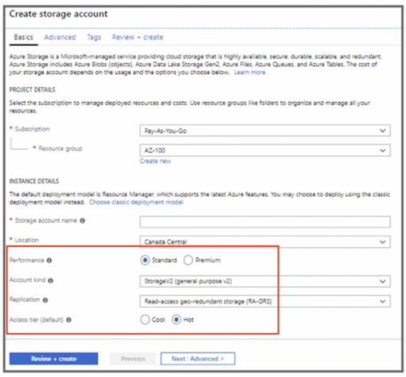
1-2 Types of Blob Storage
- Block blobs
- Test and binary data
- Append blobs
- Append operations, such as logging data
- Page blobs
- Virtual Hard Disk (VHD) files
1-2 General-Purpose Storage Accounts
- Standard:
- Magnetic drives
This type of storage is great for test and dev and non-production environments
- Premium storage:
- Only page blobs are supported, such as virtual machine disks 99.99% SLA without requiring an availability set
Microsoft recommends for all virtual machines
1-3 Storage Account firewall
- Default rule accepts all connections
- Add allowed IP addresses
- Exceptions are used for trusted Microsoft services, read access to storage logging, or metrics from any network
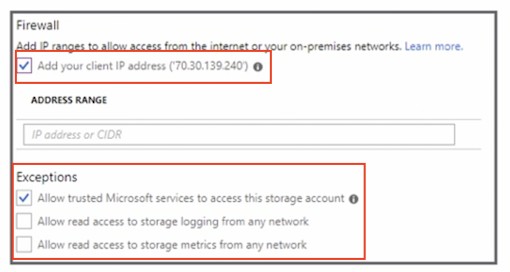
1-4 Configrue Network Access to storage Account
- Only traffic from allowed VNet can access the storage account
- Set the default rule network access to deny to only allow traffic from specific networks
- User must have
Join Serviceto a Subnet permission (Storage Account Contributor role)
Be careful that you don't lock yourself out, and not anyone can configure these virtual networks.
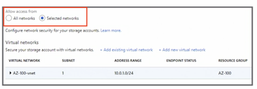
1-5 Generate a Shared Access Signature
- Allow access without sharing the account keys
- Using account keys allows administrative access
- Set permissions
- Set start and expiry dates
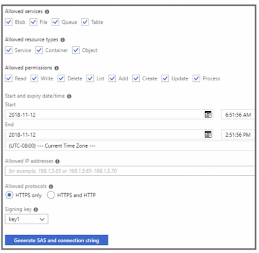
1-6 Access Keys
- Authenticate applications when requesting access to the storage account
- Keep the keys safe and don't share them
- Microsoft recommends regenerating the keys regularly
- After regeneration, apps and resources will need to be updated
1-7 Regenerating Access Keys
- Update the application to use key 2.
- Regenerate key 1.
- Update the application to use key 1.
- Regenerate key 2.
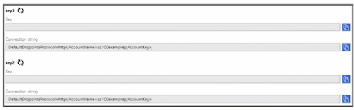
1-8 Azure Storage Explorer
- Manage storage accounts from your local PC
- Upload and download files or folders
- In preview, Storage Explorer via the portal storage account
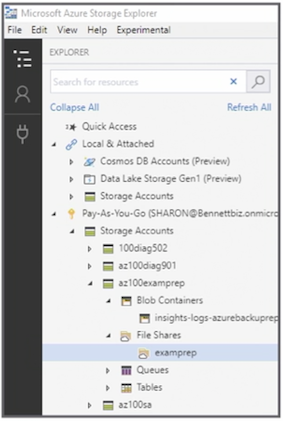
1-9 Azure Storage Replication
- Locally redundant storage (LRS): replication within a storage scale unit (same datacenter)
- Zone-redundant storage (ZRS): replicates data synchronously over three availability zones
- Geo-redundant storage (GRS): replication to another region
- Read-access georedundant storage (RA-GRS): replication to another region with read access
1-10 Key Points
- Understand the different types of replication
- Locally redundant storage (LRS)
- Zone-redundant storage (ZRS)
- Geo-redundant storage (GRS)
- Read-access georedundant storage (RA-GRS)
- Know the different types of storage
- Know how to create a storage account
- Know the order in which to generate keys
- Be familiar with the new firewall and VNet services
2 Import and export data to Azure
2-1 Overview
- Transfer large amounts of data to Azure datacenter
- Import data to Azure
- Prepare physical disks and ship to the datacenter
- Export data from Azure
- Ship empty drives, configure blobs to export, and ship drives back
2-2 Prepare the Disks
- Must create a journal file that contains
- Drive serial number,
- Encryption key,
- Storage account information
- Must enable BitLocker
- Copy data
- Prepare disk using
WAlmportExport.exe
2-3 Create Import into Azure Job
- Provide basic info, such as a resource group or name
- Upload journal files
- Select Import destination
- Configure return shipping information
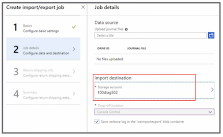
2-4 Create Export into Azure Job
- Provide basic info, such as a source group or name
- Select storage account
- Select blobs to export
- Provide shipping details
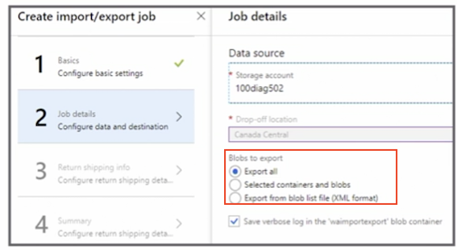
2-5 Azure Data Box
- Physical storage device
-
Offline data transfer
- Data Box Disk:
<40 TB - Data Box:
40-500 TB - Data Box Heavy:
>500 TB
- Data Box Disk:
-
Online data transfer Data
- Box Gateway, Data Box Edge
2-6 Configure Azure Content Delivey Network (CDN) Profile
- Deliver high-bandwidth content quickly using distributed servers
- Objects are located in the closet point-of-presence (POP) servers
- Create a new CDN profile
- Select pricing tier
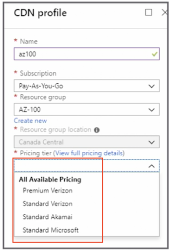
2-7 CDN Products
- Premium Verizon
- Standard Verizon
- Standard Akamai
- Standard Microsoft
- Delivery of large files and media via general web delivery is supported on Microsoft and Verizon only
2-8 Create a CDN endpoint
- Select origin type and hostname
- Origin path for a specific directory path - storage account
- Choose protocols
- Type of optimization
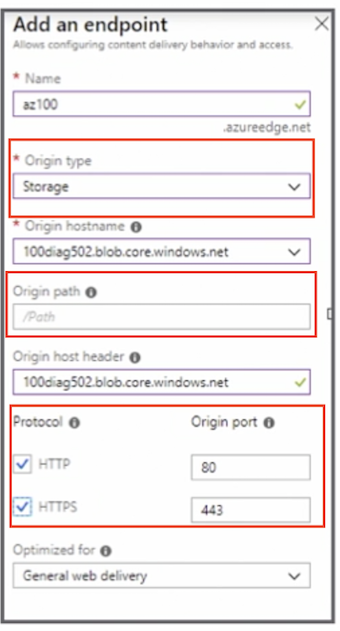
2-9 Registration Propagation Times
- Microsoft: 10 minutes
- Standard from Akamai: 1 minute
- Standard and Premium from Verizon: 90 minutes
2-10 Key Points
- Know when you would need to use Import/Export service
- Practice creating import and export jobs
- Review the specifications of the Azure Data Box service
3 Configure Azure files
How to configure Azure files and the Azure File Sync service.
3-1 create the Azure file share
- With Portal
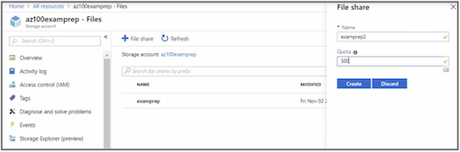
- With PowerShell
#Create a context (storage account name and account key)
$storageContext New-AzureStorageContext storage-account-name> storage-account-key>
#Create a file share
New-AzureStorageShare logs -Context $storageContext
3-2 Azure File Sync Service
- Azure becomes the repository for shared files
- Files can be accessed from on-premises systems, cloud app, or systems
- Supports cloud tiering
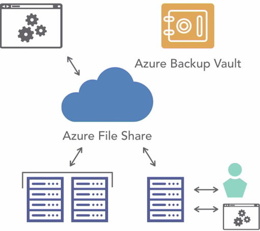
3-3 Steps to Create the Azure File Sync Service
- Install the agent on Windows Server 2012 R2 or Windows Server 2016
- Register the server
- Deploy Storage Sync in Azure
3-4 What Azure File Sync Supports
- Windows Server 2012 R2 or Windows Server 2016
- New Technology File System (NTFS) volumes/compression
- BitLocker, Azure Information Protection (AIR), Azure Rights Management (RMS), Active Directory Rights Management Service (AD RMS)
- Distributed File System (DFS) with agent 1.2
3-5 What Azure File Sync Doesn't Support
- File systems other than Windows Server 2012 R2 or Windows Server 2016
- Sysprepped systems
- NTFS Encrypted File System (EFS)
3-6 Create Azure Sync Group
- Define the topology
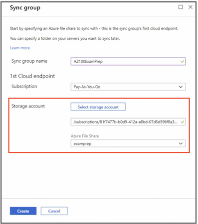
- Provide the group name, your subscription, select the storage account and the file share
- Add in two endpoints,
- The first endpoint being the cloud endpoint, and this endpoint will point to the Azure file share.
- The second endpoint is the server endpoint, and this will be the path on that registered server
3-7 Endpoints
- A cloud endpoint: points to the Azure file share
- A server endpoint: the path on the registered server
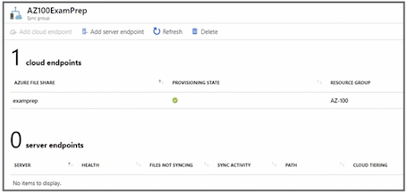
Troubleshoot Azure File Sync
- Never remove the endpoint as the first step
- Ensure the agent is being installed with elevated privilege
- Move the primary domain controller (PDC) role to Windows Server 2012 R2 or late
- Be sure to unregister servers that are no longer used
3-8 Key Points
- Know the troubleshooting steps to resolve a file sync issue
- Understand what Azure File Sync doesn't support
- Practice installing Azure File Sync, which includes several steps and takes time
- Know all the steps to configure Azure File Sync
4 Implement Azure backup
4-1 Azure Backup (MARS) Agent
- Protects
Files, folders, and System State Windows physical or VM servers and desktops
- Backups are kept
Azure Recovery Services vault
- Key points
No Linux support; not application aware
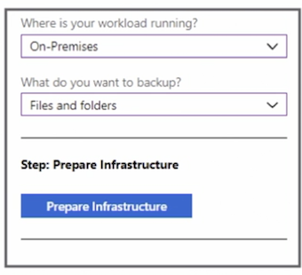
4-2 System Center DPM
- Protects
Files, folders, volumes, virtual machines, applications, workloads, application-aware snapshots (VSS), and System State
- Backups are kept
Azure Recovery Services vault, locally, or tape
- Key points
Requires System Center license
4-3 Azure Backup Server
- Protects
Files, folders, volumes, virtual machines, application workloads, application-aware snapshots (VSS), and System State
- Backups are kept
Azure Recovery Services vault or locally (no tape)
- Key points
Does not require a System Center license; does not support tape
4-4 Azure Virtual Machine Backup
- Protects
Azure virtual machines (Windows and Linux), application-aware snapshots (VSS)
- Backups are kept
Azure Recovery Services vault
- Key points
Does not require an agent; only back up once a day
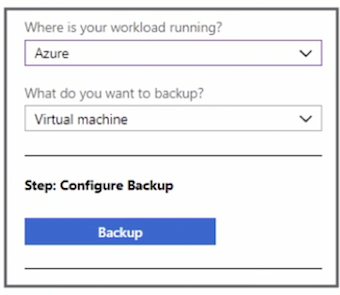
4-5 Perform and Review Backup operation
- Options will be dependent on the type of backup initiated
- Example of a virtual machine backup
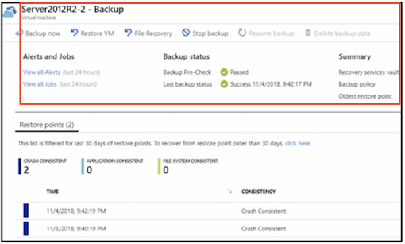
4-6 Create and Configure Backup Policy
Three policy types:
- Azure virtual machine,
- Azure file share,
- SQL Server in Azure virtual machines
Policy name, backup schedule
Set the retention range
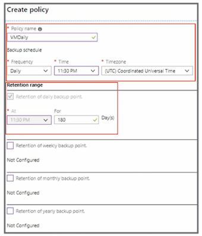
4-7 Configrue and Review Backup Reports
- Link to Diagnostics settings
- Archive to a storage account
- Select logs and retention in days
- Can be viewed with Power BI
- Wait for 24 hours for the data to be available
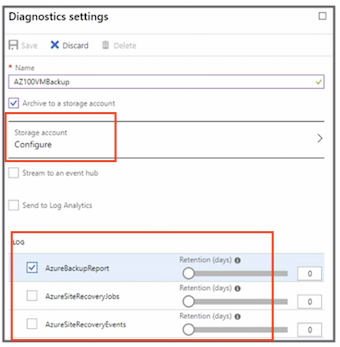
4-8 Perform a Restore Operation
- Restore procedure will be dependent on the type of backup
- For example
- Azure virtual machine backup files and the virtual machine can be restored
4-9 Additional Notes
- In preview, back up Azure file shares
- In preview, SQL Server in Azure virtual machines
4-10 Key Points
- Review the different backup options
- What backup option would be the best given a specific scenario
- Know how to create a Recovery Services vault
- Review replication options when configuring the Recovery Services vault